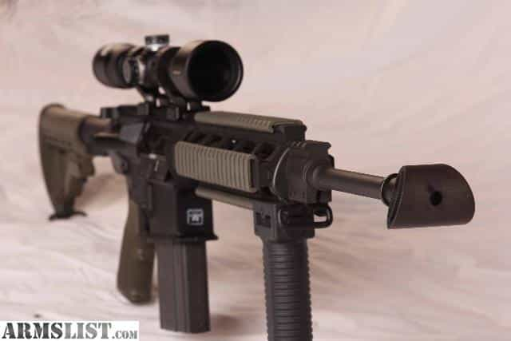
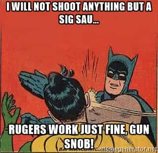
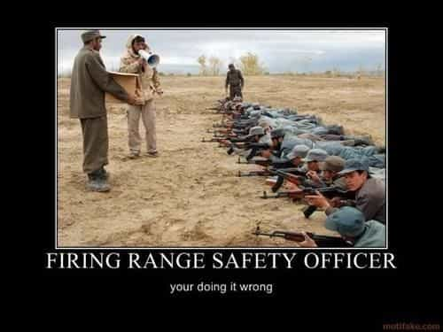
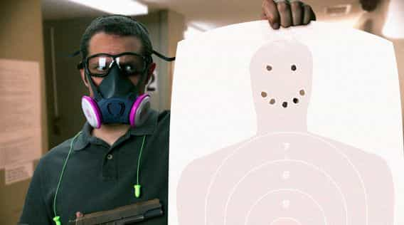
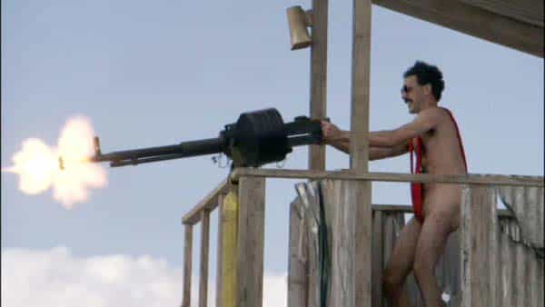

Luke Stranahan is an engineer by trade and an armed patriot by inclination. He writes for Return of Kings as a leisure pursuit and an attempt to do his part to help reverse the slide into moral decrepitude of modern society. Follow him on Twitter.


Fueled by liberal threats, the desire to exercise a right to protect oneself, and the basic truth that shooting is a lot of fun, more people become part of the gun culture each day. This means that more people, and more types of people, will come to your local public range. Although part of being a man is knowing firearms, some people sadly don’t know much, or have some really bad habits, and much comedy, drama, and even unsafe situations can result. Here’s ten types of people found at gun ranges, and how you can avoid being any of them.
Also known as “the guy with the unnecessarily loud rifle,” this guy delights in corking off his non-magnum rifle with an unneeded and overly large muzzle brake at every given opportunity. Typically found under tin-roofed shooting structures, the blast from this dude’s rifle makes every else go for muffs AND plugs.

Muzzle brakes do not make friends, and they are really only needed in three situations: you compete, you’re shooting a really heinous magnum, or you’re a medically documented recoil sensitive person. If you can’t handle shooting .308 out of a semi-auto all day long without a muzzle brake, maybe you should take up crocheting; it really doesn’t kick THAT much, and muzzle brakes on a 5.56/.223 AR is legitimate cause to point and laugh.
If you compete, and you need the recoil reduction to shoot faster, or shooting some massive magnum, then you’re serious enough to come to the range at times when others aren’t there for you to deafen. Muzzle brakes are the open headers of rifles; be judicious in their use.
Showing up in camouflage and looking a little crazy is not a crime, nor is shooting a whole lot of ammo off in a frenzied, scared manner. However, when you start waving your rifle around, sweeping people, and/or diving into firing positions with live rounds chambered and the safety off, you are putting yourself and others at unnecessary risk with your antics. Some people believe that our lives are worth nothing because the UN/aliens/men in black/foreigners are going to get us all tomorrow, but, here in reality, we want to leave the range with the same number of holes with which we arrived.
“If SHTF, they won’t have donuts. You may want to prep for that….them not having donuts, I mean.”
Most rifle lines are set up to shoot from benches. Shooting from field positions next to the bench is also ok for most ranges that aren’t overly fascist. Even timed transitions to shooting positions is usually ok, provided the rifle is not loaded, or at least the safety is on. Always keep the muzzle in a safe direction, and keep it, and only it, across the firing line, and you should be ok.
This guy will loudly inform you that he is “going hot” before shooting each magazine he loads, despite the range already being in a hot condition. Some of these type will use other commands like “fire in the hole” (which means you’re using explosives, not shooting) or “SEND IT” or something macho he heard in a movie or Call of Duty.
Unless you’re running one of these.
You should NOT be yelling anything on a firing line as you don’t need to startle anyone for no good reason. The only exception is yelling “Cease Fire!” really loudly for a safety problem. Once a range is declared hot, you are free to shoot until it is declared otherwise, and that’s a unanimous decision by all involved. Likewise, when a range is cold, everyone must be back across the line, notified, and agreed upon before it goes hot again. There’s really no reason to say much else to other shooters other than idle chat if you both are inclined.
“Don’t worry about a man with 100 guns; worry about a man with one that knows how to use it.” It’s much better to spend 500 dollars on a pistol and 500 dollars on ammo than to spend 900 on the pistol, and 100 on the ammo.
A gun is a tool, and, like any tool, you need to practice, a lot, to be able to use it well, no matter what that intended use may be. I like my expensive guns, sure, but I also own cheaper ones, and I have a bunch of ammo for them, even though I’ve been neglecting my range time recently.

There is no shame in taking your one gun to the range for practice, even if it’s nothing special. If all you can afford is a Taurus, then get that thing and practice; the first pistol I bought was a Taurus, and I still have it.
There’s a time to handle your guns, and when other shooters are downrange dealing with targets is NOT it. Some people think they can do anything and everything with their guns any time they want, including preparing magazines, loading guns, and even pointing them downrange at people while the line is cold.
I hear he’s an ROK reader.
Ranges vary with their rules, but a good start is not to actually be touching a gun when the line is cold. Cased guns are ok to move around, and you can usually always put rounds into magazines whenever you want, but a gun you are using should only be put onto the firing line, shot, or removed from the firing line when the line is hot.
Some people like to shoot odd things to add to the fun, and, while that’s usually cool, if something is messy, hazardous, obnoxious, or unsafe, you probably shouldn’t do it. Even if you intend to clean up the mess from shooting your old vacuum tube TV, people aren’t going to want to stop and give you the time to do it.

Don’t shoot things made of glass, or things that will cause ricochets, like rocks or metal. Dinger targets should always be designed to deflect so the bullet does not come back at you. Tannerite and other explosives should be used at at least the minimum safe distance, and should not be placed inside anything causing shrapnel. Any mess left behind should be biodegradable and edible by local wildlife, like pumpkins.
Many ranges have a person who is part of the staff fulfilling the role of Range Safety Officer. Unfortunately, other ranges often have a person who is NOT part of the staff fulfilling the role of Range Safety Officer via self-appointment. While it’s cool to have a passion for safety, a RSO is there to be an RSO, and is there in an official capacity. Nothing makes someone look more foolish than assuming authority that isn’t theirs.

Your job as a shooter is to make sure you yourself and those in your party are behaving safely. If you notice someone else breaking the safety rules, you can correct the situation gently at first and more firmly later, if necessary, but, if everyone is cool, then leave them alone. Ranges can be quite safely run without a RSO, just communicate before going hot to cold or vice versa.
This guy likes to check his target … a lot. You aren’t even through your first magazine, and he wants the range to go cold so he can go see where he hit before shooting again. Never having heard of a spotting scope or good pair of binoculars, he won’t even accept yours, since he has to go mark his shots before shooting more, and he’ll sit there, playing the passive-aggressive game of watching you and trying to make you stop shooting and safe the range solely by the power of his MIND.

Always hang enough target to keep you occupied, and bring along a spotting scope to check when you want without having to go downrange. If you’re done with your group, find something to do, or put your feet up and relax, just don’t hover over the other shooters. The one exception is when you are done for the day and want to leave; it is ok to ask for a cold range prematurely since you won’t be bothering them any more after you leave.
This guy won’t leave you, or others, alone. He might be ogling your guns or gear, or talking when no one is listening or cares, or dispensing advice if you’re doing something with which he disagrees. He really just wants to be nosy and see what you’re doing, so the easiest way to deal with him is stop and talk to him, and ONLY talk to him, until he gets the hint that nothing is going to happen until he quits bugging you and goes back to his area.

Best way to not be one yourself is to meet the other shooters when you start, then leave them alone. A little bit of gun ogling, along with a discerning question or two, is ok, but, unless the guy really wants to talk, do your thing, and let him do his.
The poor host is none of the above idiots, but his guests are. Private ranges are often club-based, with members and their guests allowed to shoot. The member may understand the importance of the rules, but the guests may not think that way, and they’ll run around bothering other members by being one or more of the above.

If you take guests to your club range and they behave poorly, it reflects on you. Some people can handle shooting guns responsibly, others can’t. Go over standard gun safety and any specific club rules before you even go to the range so that you know your guests understand them, or at least you know who not to bring.
Most of these can be filed under “be safe” and “don’t bug the other shooters.” While gun ranges, full of armed people, are usually a bit more formal and polite than modern society in general, it still helps to know what to do in any situation, and you’ll still run into people who either don’t know what they’re doing wrong and the offense it generates, or that are pretending to not know and are playing off your generosity.
Always be safe, and grant the benefit of the doubt once, but, after that, you need to correct the unsafe or bothersome guy, and, if even that fails, get the guy’s info , let your club kick him out, and leave the range in the meantime; it’s not worth the confrontation. Be safe.
Read More: The Fundamentals Of Gun Safety